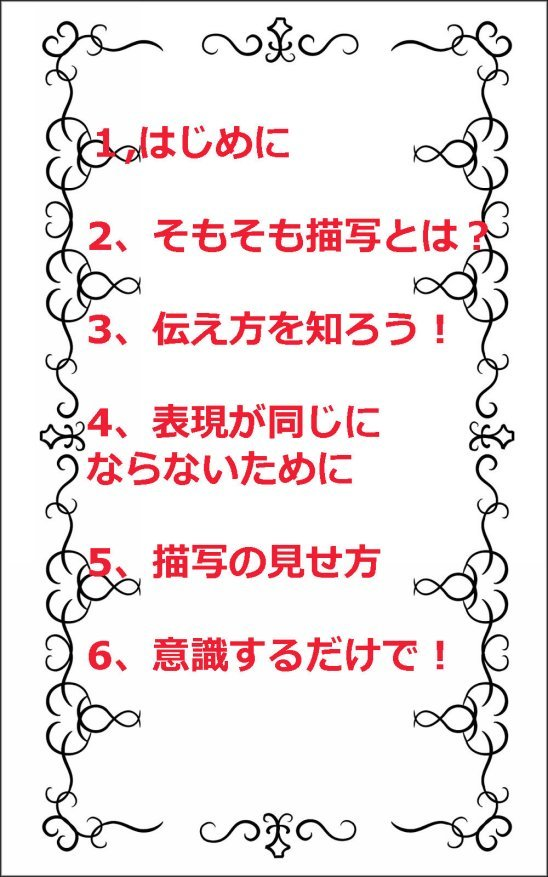
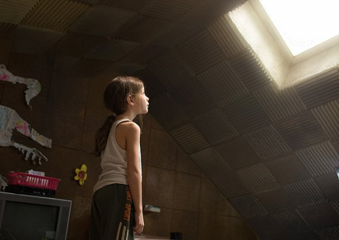
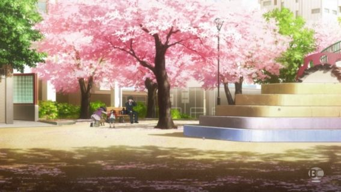
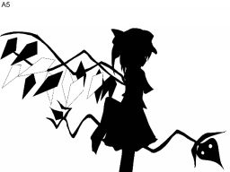
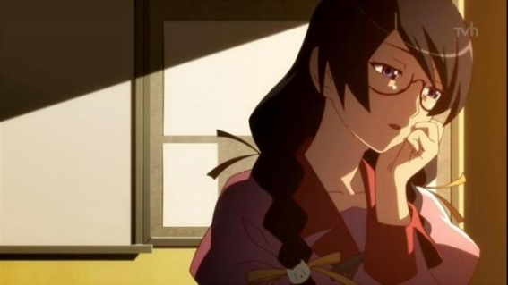

| 描写にテクニックはいらない！これさえ意識すれば描写は簡単にできる！ | |
| 凪那 | |
| nagina (2016) | |
【はじめに】
どうしても読者に説明する小説になってしまいます。
表現が薄っぺらい、幼稚っぽいと言われます。
もっと読者をあっと驚かせる小説を書けるようになりたい！ 読者を惹きこむ小説を作りたい。
でも、実際どう表現すればいいのかわからない。描写とか言われても、よくわからない。
本書では、そんなあなたに描写をしっかりと理解し、すらすらと表現できるようになるための方法をお届けいたします。

【そもそも描写とは？】
描写しようと思ったら、気づいたら説明してしまっていた。そもそも描写と説明の違いがいまいちよくわからない。
ここをしっかりと理解していなければ、描写をしましょう。プロの小説を読んで学びましょう。真似しましょうと言われても、何をどう学べばいいかわかりませんよね？
描写と、説明の違い
説明は設定や、読者に状況を主人公が一人称で語ることが説明です。
例えば、2056年、この時代では自分の意志というものは存在しない。ロボットのようにただただ上のものに従わなければならない。それが嫌ならば、使える側に這い上がるしかない。だが、そんな中、俺たちは抗い続ける。
という冒頭で始まるとしましょう。
これが説明です。
描写はといいますと。
まずは読者に全てを教えてあげません。
読者が気になるように書くのが描写のよさです。
例えば
「一体どうなっているんだ。不可能犯罪だと！？」
「どうもこうもない。見たままだっただろう」
「そうか」
男は吹かしていた煙草の火を消した。まだ残っている煙草は、虚しく灰皿の中で身を縮めて行った。
というのが描写です。
これはどういうことか、といいますと。
煙草が消えていく様を説明したいのではなく、男がまだ吸えるほど残っているにも関わらず、煙草を消さなければいけなかった。ということを読者に知らせています。
言えば、説明は読者に完全にそれがどういうことなのかを伝えるものです。
そして描写は、その場ではその行為の意味、その表現を説明しないものです。
これが説明と描写の明確な違いです
他にも描写には心理描写、人物描写、風景描写というものがありますね。
心理描写：キャラクターの心理をあらわすもの。心理なので他のキャラクターには伝わらないもの。
勘違いしてはいけないのが、心理描写＝「～と思った。僕は憤った」と表現するものではありません。
上手い心理描写、読者に違和感を与えない心理描写のやり方
・行動から読者に心理を悟らせる。
・会話から読者に心理を悟らせる。
最初に描写は読者に明確に伝えないものだと言いましたが、それは心理描写でも同じことです。
彼のその行動に憤りを感じた。彼女は何も思っていない様子だったが、僕はあの行動はどうかと思った。
これも一人称の心理描写ですね。
しかしどうでしょうか？これがずっと続けばすごく薄っぺらい小説だと思いませんか？
例え一人称であっても例えば上の文章と同じような状況を描写しなおすと。
彼女はいつも通りの笑顔を浮かべていたが、僕は今すぐ扉をぶち明けて帰ってやろうかと思った。彼女は優しすぎる、あいつの行動さえも許すなんて。
という風にすると先ほどよりもこの人物の怒りを感じませんか？
心理描写のポイントは感情を表す言葉を使わないことです。
怒った、楽しい、嬉しい、悲しい、寂しい。
この言葉を使った途端に薄っぺらくなってしまいます。「怒った」と書けば、怒っていることがわかっていいかもしれませんが、どれくらい、どのように怒っているのかわかりにくくなります。
三人称だと完全に行動と会話だけで現すことになります。
例えば先程のシーンを三人称にすると、三人称なので適当に名前をつけます。
健司が帰るまで、幸太郎（僕）はただただ震える拳を握りしめていた。時折助けを求めてか、それとも心配しての行動だったのか、由美子の表情を伺っていた。しかし由美子は終始笑顔で健司を見つめていた。幸太郎は一人、家へと向かいながら小さく舌打ちした。あの時握りしめていた拳を見つめるも、幸太郎は溜息をついて家に入った。
幸太郎がどう思っていたのか、読者には明確にはわかりませんね。だからこそなぜ、あの時拳を見つめていたのだろうか？由美子のことどんな気持ちで見ていたのだろう？って考えられますよね。
これが描写のいいところです！
説明と描写が混同する人は、ここをきちんと理解できていないのです。
描写では正確に読者に全てを伝えない。
現実でもそうじゃないですか？ 例えば友達が誰かに片思いしていて、その気持ちを聞いていなくても行動でわかることってありますよね！ それが描写です。
要は、好きなのかな？と思わせる行動をとっているわけですから。
恋愛小説を書くときも、一人称でないのならばここを意識してほしいです。
一人称は視点の人物の感情を出せるのがいいところですが、出せるからと言って薄っぺらい言葉になるのだけ注意しましょう。
人物描写：人物の見た目、または性格を伝えるものです。
大抵の人が人物描写をしてくださいというと、彼女は腰まで届く長い髪の毛を垂らしていて、大きな目が特徴的だ。いつも黒い服を着ていて、髪も真っ黒の中、大きな目が怖い印象を与えている。彼女といると地獄に連れて行かれそうだ。そんなナンセンスなジョークを言ったのは誰だっただろうか。
というように人物の見た目をただつらつらと語ることだけが、描写だと思ってしまいます。
確かに見た目を伝えることは大切です。読者にどんな人物なのかを明確に伝える必要がある場合もあるでしょう。
しかし主人公などのメインキャラクターにのみ使うのならいいですが、出て来るキャラクター全員を書いていたら読者はどれがどのキャラクターかわからなくなり、読むのが嫌になってしまいます。
人物描写というのは何も見た目だけのことではありません。読者が読んでいてどんなキャラクターなのか想像できればいいのです。
例えば
「入りなさい」
社長と会うのは入社式以来だ。その時だって、ただ一方的に演説を聞いていただけで、どんな人だったか全く覚えていない。
扉を開ければ、睨みつけるように私を見ている。堅い声同様、いかにも偉い人といった様子だ。
「君に頼みたいことがある」
という流れで、社長の見た目は一切書かれていませんが、これを読んで優しそう、楽しそうな社長とは誰も思わないでしょう。真面目で、少し頑固そうなのかな？と想像できます。
こんな風にエピソードを交えて性格を伝えるのも人物描写です。
読者にさりげなくキャラクターが伝わるので、あえて人物を説明する手間もなくなりますし、エピソードと関連づけられれば読者もキャラクターを覚えやすくなります。
あなたが好きなアニメのキャラを説明するとき、同じアニメを見ている人に説明する場合、見た目よりもあの時の巻ででてきたキャラクターとかいいませんか？
現実でもそうじゃないですか。名前を言ってぴんとこない友達に説明するとき、見た目よりも、いつもあの子と一緒にいる子。とか、雰囲気を説明したりしませんか？
日常でも人物描写は無意識にしているものです。それが小説となると初めてやることのように意識してしまっているだけです。
人物描写をするときは、誰かに説明するときどんな風に話していたかな？と思い出しながら書くのもいいですね。
人物描写はエピソードと関連づけて書きましょう！
風景描写：情景、世界観を伝えるもの。またはその情景から人物の心理状態などを現すこともある。
小説家にとって一番難しいのが風景描写ですよね。風景描写ってどんな風に書けばいいの？どこまで書けばいいの？
そこで風景描写を書くときのポイントをお伝えします！
風景描写だからと言って、例えば主人公の部屋を描写するときに、その部屋にあるもの全部描写していたらきりがないですよね？
机があって、ベッドがあって、そのベッドは緑色で、サッカーが好きだからサッカーボールがおいていて、ポスターがあって、でもそれ以外は特に何も置いてなくて殺風景。
読んでいて嫌になりませんか？別にいいよ。と思えてきますよね。
そうです。風景描写って基本的には物語を進める上では必要がありません。
例えばミステリー小説を書くときの現場状況など、必要なときはでてきますが、それ以外に風景描写ってそれほど必要ではありません。
それじゃあ風景描写はいらないんですね。となってしまいますと、今登場人物はどこで会話しているのかな？読者の頭の中では真っ白な空間で登場人物が話している姿が映し出されてしまいます。
それじゃあどうすればいいの？
風景描写では、この場所の説明がどうしても必要です。この世界観を説明しないといけないです。という場所以外ではどんな場所かわかるくらいでいいです。
描写はなくても薄っぺらくなりますが、ありすぎても読むのが疲れるだけです。
人物描写の時もお話しましたが、これも同じです。場所を説明するだけならば、友達にどんな場所？と聞かれた時にどうこたえるかを考え、そのまま書けばいいです。
友達に説明するときって、特徴と雰囲気を伝えませんか？基本の風景、情景を伝えるのはそれで大丈夫です。
では重要な部分を伝えたい。しっかりと描写したい場合はどうすればいいのか、ここが一番知りたいところですよね。
風景描写はキャラの心情と交える場合が大半です。
すごくありふれたもので言えば、雲行きが怪しくなってきた。などです。
目が覚めると、そこには白しかなかった。真っ白な世界。ほんの小さな部屋、家で考えれば畳2畳といったところだろうか。しかし真っ白で何も置かれていない空間は、とても広く感じ、とても寒い。白は清潔な色で、俺もすごく好きだが、早く出たい。この白を見つめていると、なんだか自分が消えてしまいそうな錯覚を覚える。

というように白い部屋の描写をキャラの感情と混じらせるのが一般的な風景描写です。
後は公園の風景描写をする際に
小さな子供たちが声をあげて、楽しそうに遊んでいる。俺もあのころは何も考えず、ただ毎日遊ぶことだけを考えていた。子供たちは滑り台を何度も滑っては、毎回初めてのことのように喜んでいる。
それをベンチから見つめる老夫婦。まるで自分の孫を見ているかのように微笑ましそうだ。
公園はいつも和やかで、世の中には平和しかないと信じられる。ここにずっといられたら、俺はどんなに幸せだろうか。

風景描写から登場人物の心情を語れますね。
小説は登場人物から始まるので、語るのも一人称であればその登場人物のフィルター越しになります。つまり風景描写をする場合、登場人物とは切っても切り離せません。
三人称であればエピソードを交えて風景を描写するといいでしょう。
死の館。昔はこの館は大富豪が暮らす館だった。そのために今でも各部屋には家族写真や、ホームパーティーの写真が飾られている。ホームパーティーは50人近くの人間が集まっていた。大富豪には友人が多く、仕事関係のものも合わせて毎日20人が家に集まる場所だった。客人の部屋だけでも10部屋あるのはそのためで、客人の部屋はベッドだけが置かれている。そして、今もそのベッドには赤い血がべったりとついている。あれは大きなシャンデリアが飾られたパーティールームで50人規模のホームパーティーが開催された夜の出来事だった・・・。
というふうに物語に繋げていく。
風景描写は世界観、登場人物の感情を表すために使うものです。
描写についてご理解いただけましたでしょうか？
描写と説明の違い、描写は何を描写して、どういう効果をもたらすのか、それをしっかりと理解した上で描写の仕方についてお伝えしていきます。
【伝え方を知ろう！】
前章で描写について説明させていただきました。今回は描写をする際の注意点、どうすれば描写ができるのか、実践的なことをお伝えさせていただきます。
まず、最初に伝えたいことがあります。
描写って小説家にとって最大の難問で、未だに満足できる描写を書けた作家って2割いるかいないかです。
そこでこれからお伝えする上ではき違えてほしくないのが、描写を書くテクニックというものは存在しません！
描写で大切なのは何をどう伝えたいか。ただこれだけです。その上で語彙力であったり、表現の仕方があったりするだけで、描写自体には学ぶべきテクニックはありません。なので、これさえ意識すればあなたは読者が読みやすい、読者を驚かせられる描写をすることができます。
５W1Hを意識しましょう。
だれが、どこで、どうやってを説明すればいいのですね！
いいえ、違いますよ。
描写は読者に説明していけません。では、５W1Hを意識するとはどういうことなのか。それは、あなたが描写したことを５W１Hに当てはめてわかるのかというところです。
例えば先ほど描写したこちら
目が覚めると、そこには白しかなかった。真っ白な世界。ほんの小さな部屋、家で考えれば畳2畳といったところだろうか。しかし真っ白で何も置かれていない空間は、とても広く感じ、とても寒い。白は清潔な色で、俺もすごく好きだが、早く出たい。この白を見つめていると、なんだか自分が消えてしまいそうな錯覚を覚える。
主人公が、危機的状況に陥っている。どんな状況かわからないが、どこかに幽閉されている。
描写をした後で、当てはめられるのか確認してください。もしも当てはめられなければ、わけのわからないものになってしまいます。
ただの芸術作品で、読者には何も伝わらない結果に陥ってしまいます。
５W１Hは表現をする際には常に大切なものになります。
しかし解説文ではないので、５W1Hをそのまま書いてはいけません。それでは説明文になってしまいます。
最初の描写は読者に説明しない。は念頭においたまま、５W１Hを意識してください。
イメージわきませんか？
では、国語の読解を思い出してみてください。
国語の読解では、この文章から読み取れる読者の心情を表してください。このときの作者の心情は、何を伝えたかったのか。という風に、表現を読み解きますよね。
これをあなたが読み解かれる側になってください。と言うことです。
５W１Hを意識して、文章には出さず、しかし読み解けばわかるように読者に伝えましょう！
これを習得すれば、伏線も張れるようになります。
だって、読者に伝えずに読み解ける方法を学べるわけですから！
ということはどうでしょうか。あなたは今まで描写をできていなかった。全て説明だったということになりますね。
では具体的に描写をする際に使うべきこと、使ってはいけないことをお伝えします。
具体的に使うべきこと、使ってはいけないこと
まずは使ってはいけないこと。
それは時間の流れを、時間が経った。と絶対に言わないこと。
時は流れ・・・。というような描写はいりません。
時間が流れたことをどうしても正確に読者に伝えたいのなら、会話の中で語った方がいいです。
昼から夜になったのなら、空で表したり、場所的には人が少なくなっていった。帰宅の時間だ。という風に直接的にわからないことにしましょう。
学校であれば、時間割などで時間の経過をわからせるのも一つの手です。
使うべきこと
描写をする際にすべきことは、人物描写、風景描写に言えることなのですが、細部よりも全体像を伝える。細かく伝えすぎないためにも、ぼんやりと「シルエットだけが見える」ような状態を作るのがいいです。
読者に的確に伝えない。全体像だけを教えていれば、意識しなくてもぼんやりとさせられます。
そして必要である場合だけ、そこから細かい部分を伝えてあげましょう。
描写は読者に伝えない。そのために全体像から作っていく。これだけ意識できれば、描写を書くことができます。最初から完璧を求める必要などありません。

描写にはテクニックはありません。
意識すべきことをしっかりと意識さえすれば、あとは練習をしていけばいいだけです。
しかし、初めにも言いましたが、正直描写がなくても小説は成り立ちます。今までのことを否定するわけではなく、描写がなくても小説は書ける。つまり描写とは今書けている小説を更に魅力的に見せるものであるということを理解してほしいということです。
そのためにも、描写以前の問題が解決できていなければ、いくら描写を学んだでも、結局小説はよくはなりません。
まずは描写以外の小説にとって必要な部分はしっかりとできているのか？そこを確認していきましょう。
これは描写をする上でも大切であり、これができていなければ小説自体が成り立たない重要なものです。しかし、ついやってしまいがち、見落としてしまいがちなミスでもあります。
それが視点です。
描写でも5W1Hを考える。誰が、どのように、どうやってを読者にわからせるにも関わらず、視点が定まっていなければ「だれが」という点がすでにぶれてしまいます。
視点が定まっていなければ、読者に何も伝わらなくなってしまいます。
視点って？一人称、三人称を決めればいいんでしょう？
勿論それも大切です。一人称は主人公にするのか、それとも主人公の相棒にするのか。
恋愛であれば男側にするのか、女側にするのか。それだけでいいですね。一人称はそのままその人の感情、その人が見たもの、感じたものを書くので、ぶれにくいです。
しかし、三人称が実は難しいのです。三人称ってことは彼とか、彼女って使って作者が見ているように書けばいいんでしょう？
それも正解です。それは神視点と呼ばれるもので、そういう視点もあります。
しかし、その視点は作者視点のために全てがわかってしまいます。全てがわかってしまう。これを恋愛に使うと大変なことになりますよね。なんの面白みもありません。
神視点は全キャラクターを描けるために、一番楽な方法に思われがちですが、小説における謎に残しておきたい。という部分が書けないので、デメリットも大きいです。
視点は自分が小説をどういう風に持っていきたいか。
どういう風に運んでいきたいかで適切に決める必要があります。
神視点でなければ、三人称であっても誰か一人視点を決める必要があります。
彼から見た。彼らの様子という具合です。
人称と視点は別物です。
彼は三人称、僕は一人称、あなたは二人称。
英語でも学んだと思いますが、これだけです。
地の文で僕と言ってしまうのか、彼というのかの違いだけです。
三人称の中の誰視点か。
誰を起点とおいてこの物語は進んでいくのか、ということです。
三人称でも視点を定めた人が知っている情報しか書けません。なので、三人称だからといって、どのシーンでも書けるという認識は間違いですし。Aさん起点だったのが、次の時にはBさん起点にすることもできません。
人称と視点の認識が間違っていると、なんの疑いもなくこういうミスをしてしまうため、
視点がぶれるということが起きてしまいます。
先ほども言ったように、視点がぶれれば全てが台無しになってしまいます。
どうしても違う視点で書きたいという場合は、三人称多視点にするのもありです。
ただし、神視点同様こちらにもデメリットがあります。
多視点を使う場合、通常＊←などでシーンを切り替えて、ほかのキャラクターを起点において話を進めます。他の場面も書けるので、メリットはありますが、読者が今誰が語っていて、どこの場面なのかわからなくなってしまう。という難点があります。
つまり、多視点にするのなら、しっかりと読者に世界観を伝えられるという自信がなければしない方がいいです。
まだ、あなたが視点がぶれることがあったり、いまいち表現方法がわかっていないのであれば、私はおすすめしません。
視点をしっかりと定めた上、描写で小説を彩れるようにしていきましょう。
【表現が同じにならないために】
描写するときには特に意識してほしいのですが、同じ表現しか書けない。気づいたら前と同じ表現になっていた。なんてことありませんか。
表現を増やすには・・・。
表現を増やすには、言い換える。ただそれだけです。
例えば夕日を表してください。と言われた場合、赤く沈んでいく太陽。とだけ表すのか。
昼と夜が入れ替わる時間帯、太陽はさようならと最後の力を振り絞って人々に明るい光を与えていく。
という風に表すこともできます。
要するにそれが最終夕日のことを表しているとわかれば、どんな表現であってもいいのです。
感情であれば、怒っている。という表現を、頬を膨らませている。とすれば少し怒っているのかな。と思わせられ、顔を真っ赤にさせて、血管が浮き上がっている。とすればすごく怒っているということが伝わりますよね。
表現一つで度合いを表すこともできます。
同じような言葉しか見つからないのであれば、
一番簡単なのが類語辞典を開くことです。
今はネットでも類語は簡単に調べられます。類語で言い換えるのがもっとも早い表現を変える方法です。
または、先ほど夕日を例に出しましたが、夕日がでたときに実際空はどうなっているのか。日常から観察できる力を持っていれば、夕日をいろんな角度から語ることができます。
同じ表現しかできないのは言葉不足でもありますが、観察不足でもあります。
物事を一つの視点からしか見れていないから同じ視点になってしまうのです。
普段から物を見たときに、どういうものか説明できる癖をつけておけば、小説を書くときにも自然と言葉が浮かぶようになりますよ。
例えばカフェはどういう場所ですか？と聞かれたらなんと答えるか。というようなことです。
普段から一つの物事を様々な角度から見るようにしていれば、一つのものを様々な表現で説明することができます
読者を退屈させないためにも、またこの表現か、とおもっわせないためにも表現を普段から意識しておくことは必須です。
【描写の見せ方】
人物描写、風景描写、心理描写。それぞれのもの自体、意識すべきこと、表現を増やす方法についてはご理解いただけたでしょうか？
ここまでは説明、解説ばかりでしたね。お疲れさまです。
では、ここからは実際描写をどんな風に書いていけばいいのか、どうすれば描写がうまくなるのか、練習方法など実践的なことをお伝えいたします。
まずは、人物描写についてです。
人物描写がただ容姿を説明するだけの役割だけではないことは、ご理解いただけましたか？
人物描写をする際は、エピソードを通してそのキャラクターの性格や、見た目を伝えるというものです。
例えば、身長が低いということを伝える場合。
学校ではいつも腰に手を当てて列に並んでいた。前にならえなのに、前にならえない悔しさは今でも覚えている。とか
野外ライブで前の方に行っても、アーティストが見えたためしがない。という風にすれば、低身長で困っていたことが伝わりますね。
小説は登場人物が動くことにより、物語が動きます。
この主人公は他人を放っておけないから、こういうときはどんな行動をするだろうか？
プロットなどで、あらかじめそこを踏まえてシーンを作っておけば、人物描写を入れようと意気込まずとも、自然に登場人物の良さ、悪いところを伝えることができますね。
場面につまったときは、登場人物の性格からこの子ならどんな行動をとるか、考えて話を進めるといいでしょう。登場人物中心に考える癖をつければ、人物描写はお手のものですね。
では主要キャラクター以外の場合はどうすればいいのか？
ちらっと出てくる登場人物、謎にしておきたい人物をエピソードでは語れませんよね？
そのキャラクターたちは、全体像だけを把握させる。シルエットをぼんやりと読者に伝えるようにしましょう。
例えばどんな性格かは全くふせ、見た目だけを伝える。そして見た目はその視点の人物のフィルター越しに怪しそうに見せる
。
隣に座る女は、一人でカクテルをのどに流し込みながら、時折ほかの客に視線を向けている。黒く長い髪に、モデルのような体系、男を魅了してしまう女性が一人でカクテルを飲んでいる。スパイか、さもなくば・・・。

などというように、一人称ならば主人公のフィルター越しに世界を見せることができるので、実際にこの女性がただ一人できただけのお客様であったとしても、読者にもしかしてこの女性がキーパーソンだったりして？と思わせられます。
必ずしも全てのキャラクターを赤裸々に伝える必要はありません。性格はわかっているけれど素性はわからない。
存在は明確なのに、読者に結局その人間が一体どういう人物なのか全くわからない。というように、あなたがそのキャラクターを読者にどのように伝えたいか。それにより描写の仕方は変わります。
主要キャラクター、特に主人公の性格がわかるエピソードはふんだんに使いましょう！
キャラクターが作れたら、プロットの段階でここのエピソードでは主人公をこういう風に行動させる。そのうえでこういう性格を伝える。
これはメモ程度でもいいので、慣れるまではあらかじめ書いておくとわかりやすいですよ。
また、新しいキャラクターを登場させるとき、謎に包ませるのなら登場シーンのシナリオを作っておくのもいいでしょう。
風景描写を書く際。
風景描写難しいですよね。
風景描写は人物の心情と交えて書くものだと説明しましたが、そもそも風景を説明するために必要なこと。それは風景を知ることですよね。
「同じ表現にならないために」の際にも説明させていただきましたが、物事を説明するためには知る必要があります。
そして、風景描写とは絵画と同じです。絵画は公園という風景の中でも一部分を取り上げて書きます。風景描写も同じです。公園という中でもどこを読者に伝えるのか、その点を意識して書く必要があります。
風景描写が苦手という方は、ただただ風景の説明を全体的にしようとしているために、結局何も伝わらなくてなってしまうのです。
例えば
初めてのデートだったのに、こんなにあっさりはぐれるなんて、本当についていない。だいたい、祭りというのは人が多すぎる。チャラチャラした男たちが声を上げながら固まって歩いていたり、かと思えばバカップルみたいにくっついている人もいる。
こんな中、一人置き去りにされて、もう会える気がしない。祭りってもしかしたら別れの場所なのかな？
だって、さっきのチャラい軍団が高校生の女子二人をナンパしているし、焼きそばの屋台を出している色黒のお兄さんも、お客さんの女の子をいやらしい目で見ている。
綺麗なのは空だけかな。
屋台のない場所は人が少なくて、祭りをしていることも思わせないほど静まり返っている。数歩歩けば暑苦しいほどに人が集まっているのに。
適当な場所に腰を下ろした。せっかく買った白の浴衣が汚れてしまうかもしれない。でも、どうでもいいんだ。
「小百合ー」
人ごみの中から、彼が息を切らせて走ってくる。ああ、どこにいたって見つけてくれるんだ。
風景描写と心理描写を入り混じらせたシーンです。一人称のため、女の子が一人で心細いときに目についてしまうものを意識して書いてみました。
このように風景描写では、祭りを書くのならば祭りについて理解しなければいけませんし、どのような場所なのか把握する必要がありますね。これは別に架空の世界でも構わないのですが、実際の状況を知っている方がリアリティーはでます。
風景描写をする際に大切なのは、今何が必要で、何が不必要かしっかりと見極めることです。
そこを見極められれば、風景描写ってどこまですればいいの？風景描写の伝え方がわからない。という問題はすぐに解決されます。
物語に必要な部分だけ描写する。今いる登場人物が意識するものだけ描写する。これを意識してみましょう。
絵をかくときと同じです。
例えば運動場でサッカーをしている少年の絵を描く！と決めれば、端っこで鉄棒をしている少年がいようが、一輪車に乗っている少女がいようが、絵にはサッカーの少年しか書きません。なぜなら、その絵にはサッカーの少年以外は不必要だからです。
どこを意識し、どこに着目するかです。テレビでいえば、どこにカメラを向け、どこをズームアップするかということです。
風景描写をするときは、あらかじめ何に重点をおき、一人称であるならばこの人物は今どこを意識して見るか。三人称であるならば、この物語にとって今どのシーンを描写することが必要なのか、どこにカメラを向ければいいのかをしっかりと決めていきましょう！
心理描写について
まずは一人称の場合です。
一人称の場合だと、その視点となる人物の内面の感情を赤裸々に書くことができます。むしろ、その視点が思っていること、見たもの、感じたものを書くことが中心になります。
その視点が思っていること、いわばあなたが普段日常で感じていることそのままを書くような感覚になってしまいます。
そのため、日記のように僕は～と思った。このとき僕は怒りを感じた。というように薄っぺらい文章になってしまうのです。
絶対に～と思った。を使うなとは言いませんが、多用は注意です。一人称の場合は、五感を使って読者にイメージさせましょう。
視点が感じていて、なおかつ読者もそれがイメージできる。その状態がベストです。
見たものの美しさを伝える場合。
ありきたりですが、赤いバラのように情熱的で、美しい女性だ。とすれば、美しさが伝わりますね。
この際も、この視点の人物が使いそうな言葉を使うのがいいでしょう。
例えばすごくおいしいものに遭遇したときに、この視点の大好物がハンバーグだとします。
そうすれば、ハンバーグの次に頬が落ちる。と言えば、すごくおいしかったということが伝わりますよね？
このように一人称だからこそ伝わる。この人だからこその例え、発言を加えればこの人物の性格も際立ちます。
内面がよりリアルに伝えることができます。
例えば友達がすごく好きなアイドルがいたとして、
さっきの子、あのアイドルより可愛くない？と言えば、もしかして恋したのかなってなりますよね。
その人物ならではの発言は、このように大切なことをさらっと伝えるときにも活用できます。
では、次は三人称の場合です。
三人称の場合は視点となる人物をおきますが、その人の気持ちを直接伝えることはできません。
もしかしたら～なのかもしれない。という伝え方をすることはできますが、こんな表現ばかりをしていては、読者は何が本当のことなのかわからなくなってきます。
三人称の場合は、
読者に見せて語らせなければなりません。
それが行動で示すですね！
それは他人の会話の中で違和感を伝えてもいいですし、地の文章で説明してもどちらでも使えます。
例えば、
「ねえねえ、ちょっと見て、あの店員。おどおどしちゃってさ。大丈夫かな？」
「ああ、大丈夫じゃないと思うよ。だって、あの子ここの常連みたいだからさ」
「えっ、そういうやつ？」
この会話だけでどんなシーンか想像できたのではないでしょうか？
おどおどする店員さん。その前には可愛い常連の女の子が。まあ、この説明だけではどちらが女性で、どちらが男性かはわかりませんが。
目に浮かびますよね。
これが会話でお伝えするということです。今の会話では、あの人があの子のこと好きだよ。とは一言も言っていません。でも、伝わってしまうのです。
地の文章で説明するならば。
彼は汗ばんだ手を気にかけながら、彼女のパソコンを操作している。
「わかりそう？」
「ああ、うん。もう少し、待たせてごめんね」
彼女は一心にパソコンの画面を見つめている。とにかく早く問題を解決したのだろう。
彼は何度も手をそっとズボンで拭きながら、にじみ出る額の汗を、髪をかき分けるように見せかけてふき取っている。
「よし、できた！」
ため息を吐き出すとともに、表だって額をぬぐえるときがきた。彼女はパソコンを見つめ、笑顔で彼に迫った。
「本当にありがとう！助かった。さすが、加藤君！」
彼女は喜びのあまり彼の手を握りしめ、何度もぶんぶん振り回すと、鼻歌を歌いながらパソコンに夢中だ。
彼は静かに席を立った。
男の子が女の子を意識していることが伝わりましたでしょうか？
好きだ。とか、うれしい。などの言葉を使わずとも、シチュエーションさえ使えばキャラクターの心情を表すことはできます。
これができるようになれば、リアルでの色恋沙汰もわかるようになったり。
こういうシチュエーションで心情を表せるようになるためには、普段から人間観察が重要になってきます。そのほかにも本を読んだり、ドラマを見るなど、あらゆる媒体を見て、どんな行動をとるのかを知ることが大切です。
そして、もちろんこのときもこのキャラクターだからこそとる行動をさせなければおかしいです。
例えば、とてもまじめで堅苦しい男の子が、女の子と二人きりになった途端女の子の肩に手を回すか。というようなことです。
そういうキャラクターの設定ならばいいのですが、キャラ崩壊にならないように、行動や言動には十分気をつけたいですね。
そこがキャラクターの判別にもなります。
キャラクターを小説内で伝えられるようになるためにも必須です。
【意識するだけで！】
いかがでしたでしょうか？
描写はどのようにすればいいのか、必要なこと、意識することさえわかればできるようになります。
反対に描写がどういうものかがわかっていなければ、いくら表現方法を学んだところで描写はできません。
描写は小説の中で一番難しいところであり、描写力で小説の書き方のうまさが決まるといっても過言ではありません。
しかし、何度も言うように描写は小説にとって必要なこと全てができたうえで行うものです。
そして、描写が小説の決め手だからと言って、描写ばかりを書いていては小説は成り立ちません。
小説は説明文、会話文、描写で成り立っています。
ここの配分を大切にし、読者にとって伝わる小説を書くようにしましょう。
小説を届ける時点で独りよがりな小説を書くのはやめましょう。あなたが自分一人で書いて、自分一人で楽しむのならば誰も文句はいいません。
しかし、誰かに読ませるのならば、必ず読む側のことを考え、きちんとこれで伝わるのか。どうすれば読者は理解できるのか。そのあたりも考慮して書くようにしましょう！
何度も言いますが、一番は小説の基礎ができていることが大切です。そのうえで描写は小説を彩るものであることをお忘れなき。
この度はご購入、ご拝読いただきまして誠にありがとうございます。
今回は小説書きならば誰もがぶつかり、そして学び続ける壁である描写・表現について書かせていただきました。
現在私は、無料のメルマガにて、小説を一作完成させるために必要なすべてを1日1通配信させていただいております。
そちらではプロット、キャラの作り方などの設定面。アイデア作りや、もちろん表現・描写についても書かせていただいております。
この書籍ではお伝えできなかった部分を、メールサポートを交えながら現在200名以上の受講者と共に行っております。
この書籍を手に入れたのも何かの運命です。
よければ、あなたもその一員となり、私と共に小説を完成させませんか？
こちらから、簡単にご参加いただけます
↓ ↓
http://mail.os7.biz/m/8rli
（C）2016 なぎ